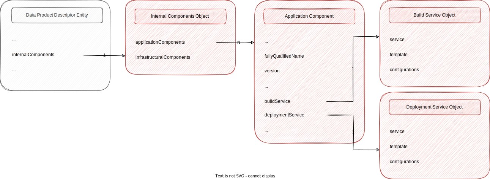

Application Components⚓︎
The previous page showed how to define the interface of services exposed by a data product. This page explains how to define the application components that implement these services.
Application Component⚓︎
Appliction components are internal components of a data product. This mean that, while the interface components are publicly available on demand to all consumers, access to application components can be restricted.
All internal components of a data product are contained in the Internal Components Object, accessible through the internalComponents field in the root Data Product Descriptor Entity. Within this object the field applicationComponents contains the list of all Application Component of the data product.

Fields⚓︎
An Application Component has the following two mandatory fields:
fullyQualifiedName(string:fqn): This is the unique universal idetifier of the component. It MUST be a URN of the formurn:dpds:{mesh-namespace}:dataproducts:{product-name}:{product-major-version}:applications:{app-name}version(string:version): This is the semantic version number of the data product's application component. The version of application components have no direct impact of the version of the data product they belong to. A change in the major version of an appication component can anyway impact the version of one interface components and so indirectly the version of the data product.
Other non mandatory descriptive fields like platform and applicationType are also available. Moreover the Application Component can be extended with other fields with "x-" prefix as needed.
Example⚓︎
The following example shows three application components that respectively describe 1. an application that load data form a downstream legacy sistem (i.e. TMS) in relatime through CDC technlogy (i.e. Debezium). 1. a streaming application that trasform the techincal events loaded in the streaming platfrom (i.e. Confluent platform) by the previous application in domain events. 1. a streaming appplication that use the domain events generated by the previous application to update the trip status in a downstream table stored in a postgres db.
All three applications are deployed in eu-south-1 region of AWS Cloud.
{
"applicationComponents": [
{
"fullyQualifiedName": "urn:dpds:com.company-xyz:dataproducts:tripExecution:1:applications:cdcIngestion",
"version": "1.0.1",
"description": "The app that offload the Trip aggregate from TMS using CDC",
"platform": "aws:eu-south-1:debezium",
"applicationType":"stream-sourcing"
}, {
"fullyQualifiedName": "urn:dpds:com.company-xyz:dataproducts:tripExecution:1:applications:eventProcessor",
"version": "1.1.0",
"description": "The app that transform tecnical events in domain events",
"platform": "aws:eu-south-1:confluent",
"applicationType":"stream-transformation"
}, {
"fullyQualifiedName": "urn:dpds:com.company-xyz:dataproducts:tripExecution:1:applications:dbSinkConnector",
"version": "1.1.3",
"description": "The app that store the updated state of a Trip in the target postgres db",
"platform": "aws:eu-south-1:confluent",
"applicationType":"stream-transformation"
}
]
}
The information provided so far are useful to track the application assets related to a specific data product. There are not anyway sufficient informtion to allow an external agent to build and deploy the application autonomously. To this end in the Application Component there are the buildService and deploymentService fileds that are described in much details in the next sections.
Build Service Object⚓︎
The Build Info Object contains the informations required to build an application component. DPDS uses integration pipelines as code to guarantee the possibility to automatize the build process in a riproducible way. Anyway to mantain technological indipendence the DPDS do not enforce the usage of any specific CICD tool.
Fileds⚓︎
A Build Info Object has the following three mandatory fields:
service(string:nameor External Resource Object): This is the logical name or the actual endpoint of the service to call in order to build the application component. If the logical name (ex.jenkins,aws-pipelines,azure-devops, ecc...) is used as field value the actual endpoint value resulution is demanded to the data product experience plane of the underlyng platform.template(objector External Resource Object): This is the definition of the pipeline to execute in order to build the application. It is passed as is to the build service implementation specified in theservicefield.configurations(objector External Resource Object): This is the map of all configuration properties that must be used by the build service at build time. It is passed as is to the build service implementation specified in theservicefield.
Example⚓︎
The following example shows an appliction that could be built using a jankins backed build service. The jenkinsfile that contains the description of the pipeline is available on an external bitbucket repository. The only configuration parameter passed in to the build service at runtime is the target stage.
{
"service": "jenkins",
"template": {
"mediaType": "text/jenkinsfile",
"$href": "https://bitbucket.org/company-xyz/trip-execution-app-sourcing/src/master/jenkinsfile"
},
"configurations": {
"TARGET_STAGE": "BUILD",
}
}
Deployment Service Object⚓︎
The Deployment Info Object contains the informations required to deploy an application component. DPDS uses integration pipelines as code to guarantee the possibility to automatize the deployment process in a riproducible way. Anyway to mantain technological indipendence the DPDS do not enforce the usage of any specific CICD tool.
Fileds⚓︎
A Deployment Info Object has the following three mandatory fields:
service(string:nameor External Resource Object): This is the logical name or the actual endpoint of the service to call in order to deploy the application component. If the logical name (ex.jenkins,aws-pipelines,azure-devops, ecc...) is used as field value the actual endpoint value resulution is demanded to the data product experience plane of the underlyng platform.template(objector External Resource Object): This is the definition of the pipeline to execute in order to deploy the application. It is passed as is to the deployment service implementation specified in theservicefield.configurations(objector External Resource Object): This is the map of all configuration properties that must be used by the build service at deployment time. It is passed as is to the deployment service implementation specified in theservicefield.
Example⚓︎
The following example shows an appliction that could be deployed using a jankins backed deployment service. The jenkinsfile that contains the description of the pipeline is available on an external bitbucket repository. The only configuration parameters passed in to the deployment service at runtime are the initial stage stage and the end state that identify the portion of the pipeline that must be executed.
{
"service": {
"mediaType": "application",
"$href": "https://jenkins.company-xyz.com/api/v1/planes/utility/integration-services/builds"
},
"template": {
"mediaType": "text/jenkinsfile",
"$href": "https://bitbucket.org/company-xyz/trip-execution-app-sourcing/src/master/jenkinsfile"
},
"configurations": {
"START_STAGE": "BUILD",
"TARGET_STAGE": "DEPLOY",
}
}
Summary⚓︎
This page has shown that:
- a data product is composed not only by its public interface but also by internal componnets
- applications that implement the exposed interfaces are internal components described through an Application Component.
- Application Component contains general information related to the specific application but also all the required information to build and deploy the application in an automatic and reproducible way.
- the DPDS uses pipeline as code to define how to build and deploy an application but do not enforce the use of any particular CICD tool, preserving in this way its technology independence.
The next page describes the contents of the infrastructuralComponents field used to provide all the required information to provision the infastructure required by application components that implement the services exposed by the product through its ports.
Created: November 7, 2022